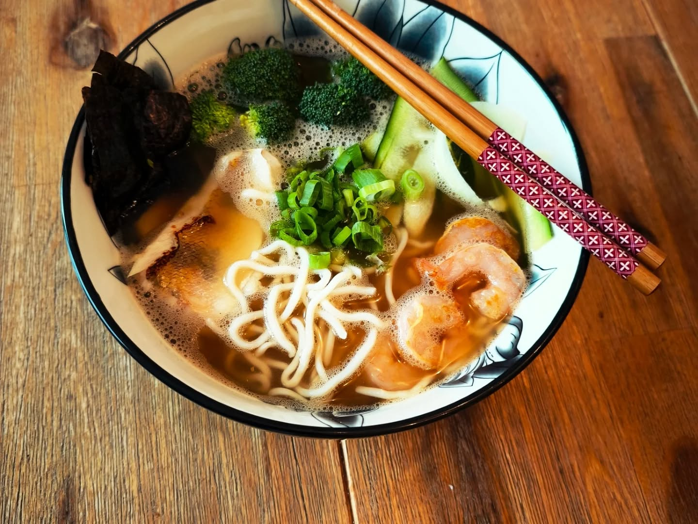
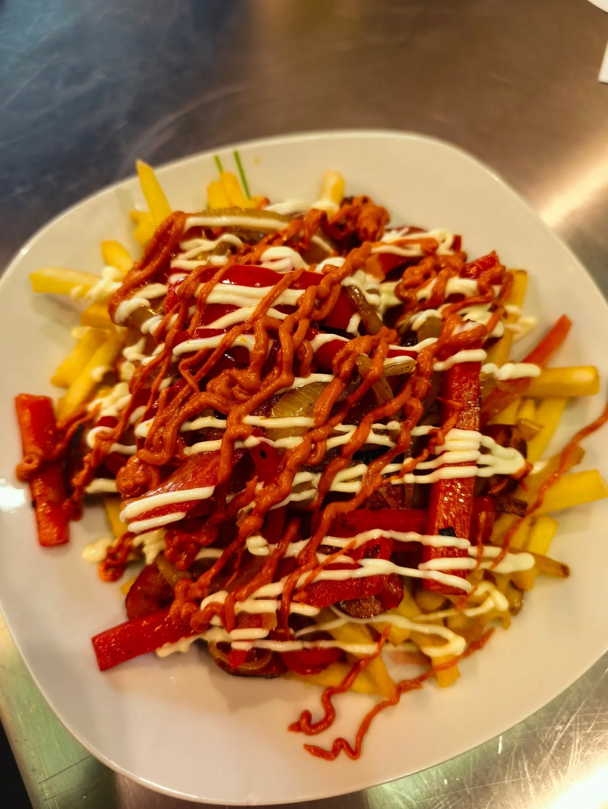
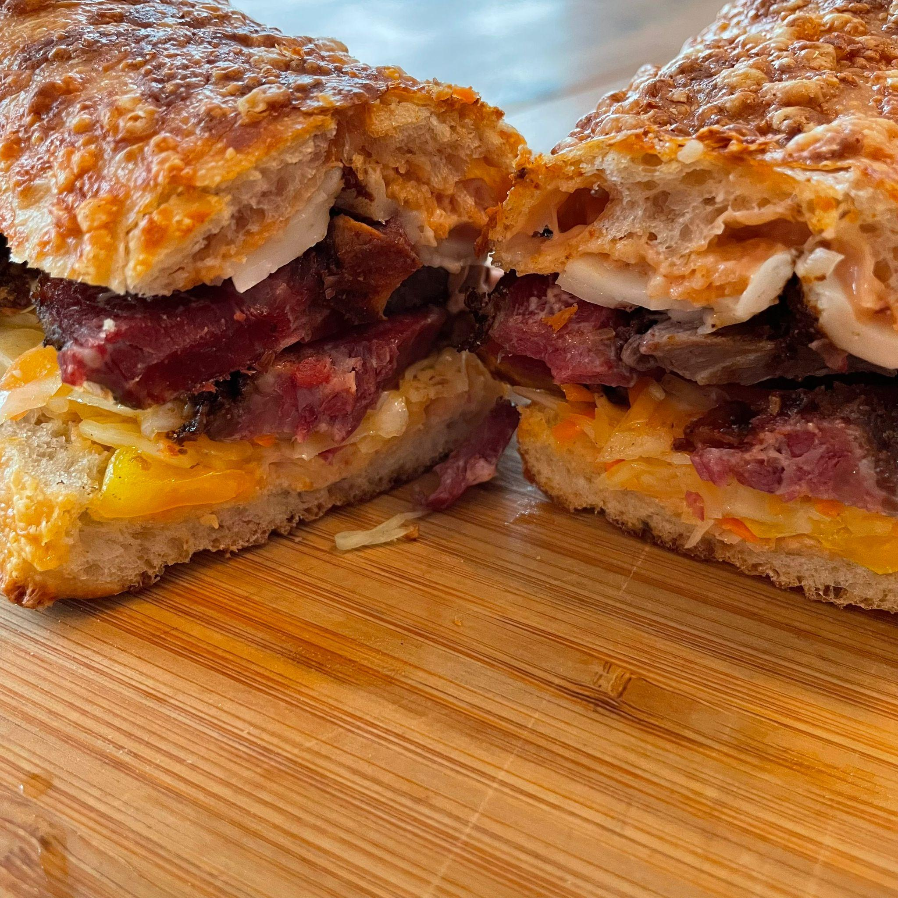

Spanisches Streetfood, frische Paella, Smoker-Gerichte und kreative Specials.
Menü ansehen


Bei La Caseta verbinden wir klassische spanische Küche mit modernen Streetfood-Ideen.
Neben unserem festen Wochenmenü bieten wir regelmäßig wechselnde Streetfood-Specials an.
Ob Paella, Smoker BBQ oder Pastrami Sandwiches – bei uns findet ihr ehrliches Streetfood mit viel Geschmack.